Sheryar Banuri
Advisor, International Collaborator
Dr Sheheryar Banuri is currently serving as Dean of College, Hughes Hall, at the University of Cambridge, and as an Associate Professor of Economics at the University of East Anglia. He is a leading scholar in behavioural development economics, specialising in human motivation and incentive design. With nearly two decades of research experience, his work focuses on human decision-making using laboratory and field experiments conducted globally. His research has informed policy design and provided guidance to governments and multilateral organisations, including the World Bank, the United Nations, and GIZ. He is a co-author of the World Bank’s World Development Report 2015: Mind, Society, and Behaviour, and the author of Good Decisions for Strange Situations and The Decisive Mind. His expertise supports BERG through strategic guidance on experimental design, behavioural interventions, and applied research in social and economic contexts.
 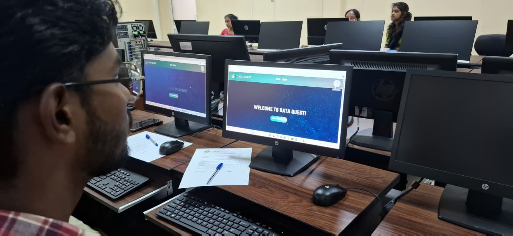
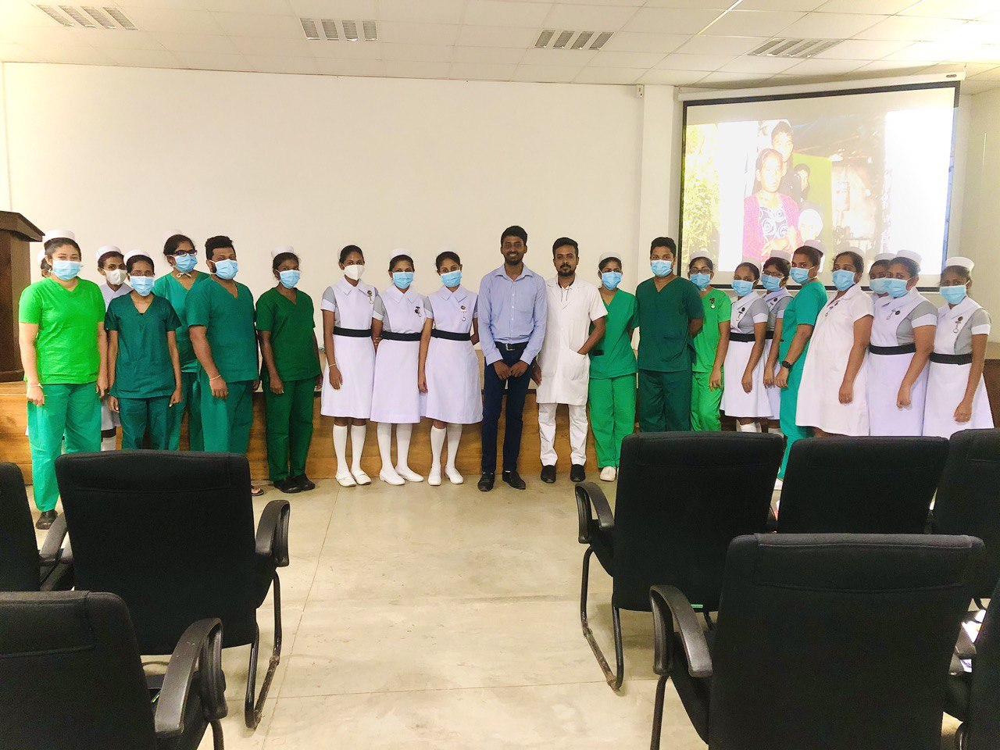
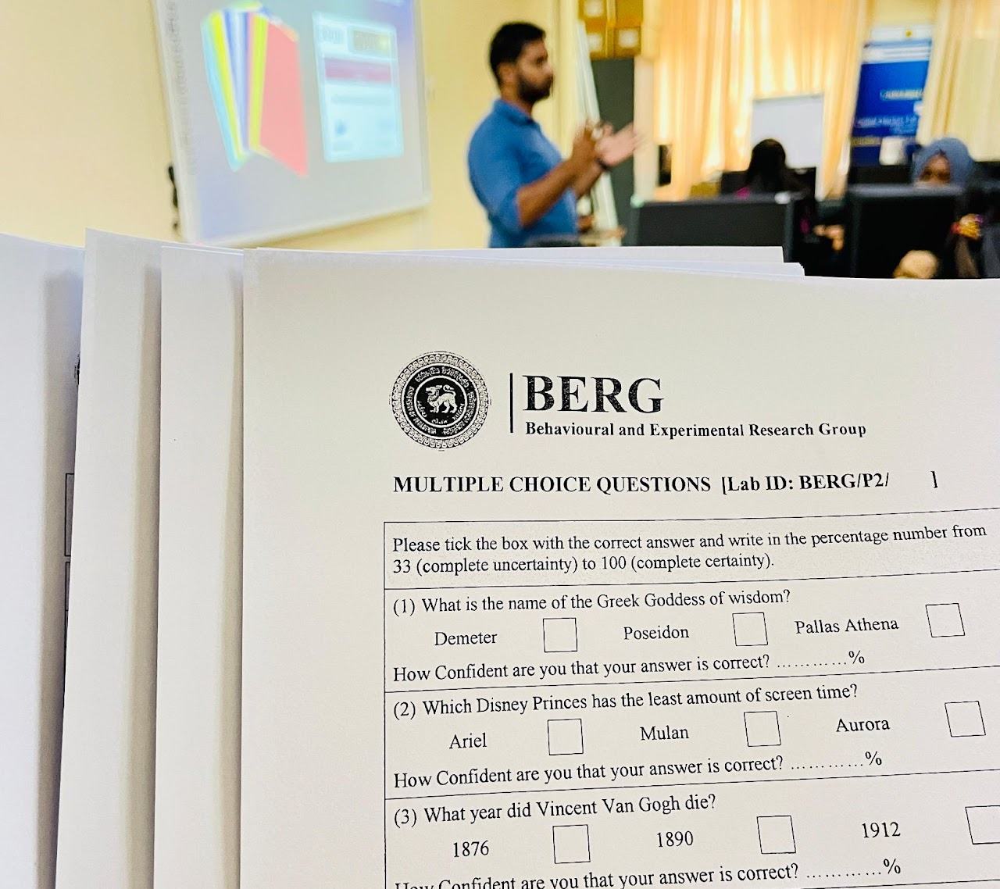
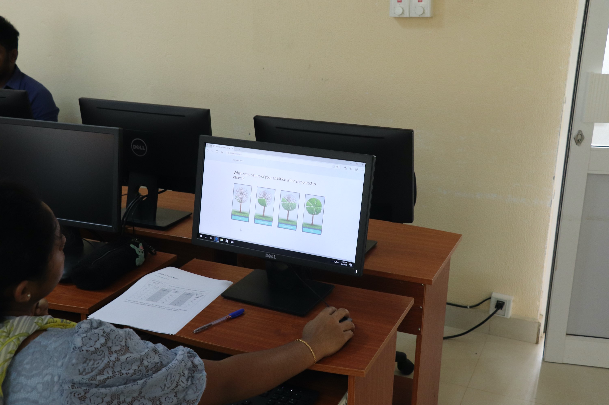
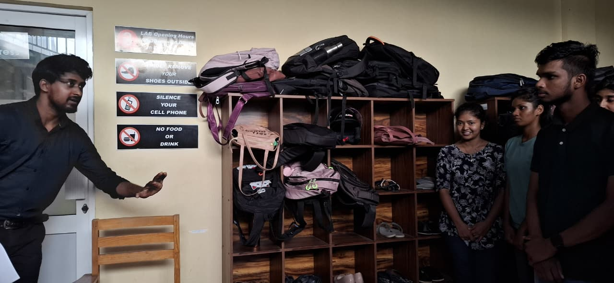
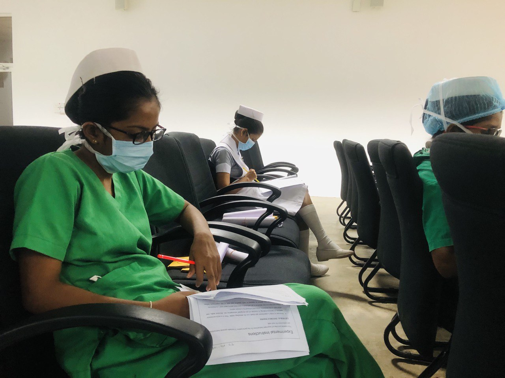
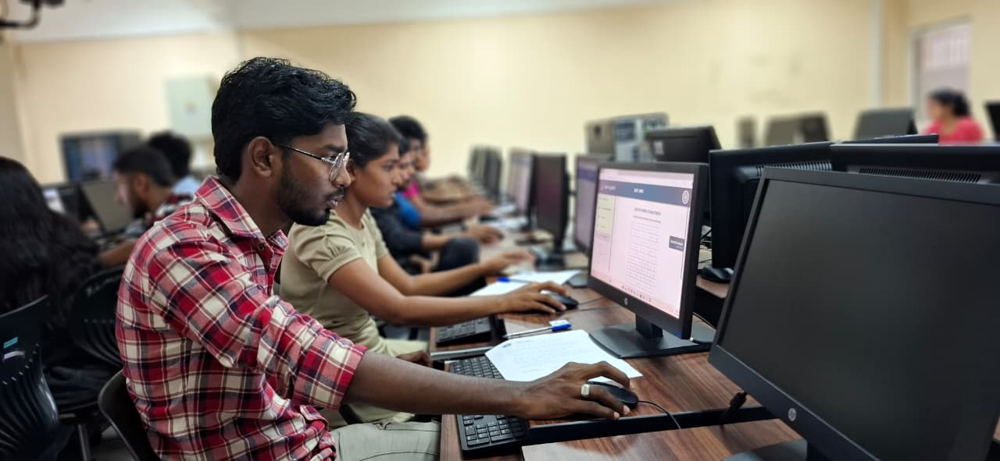
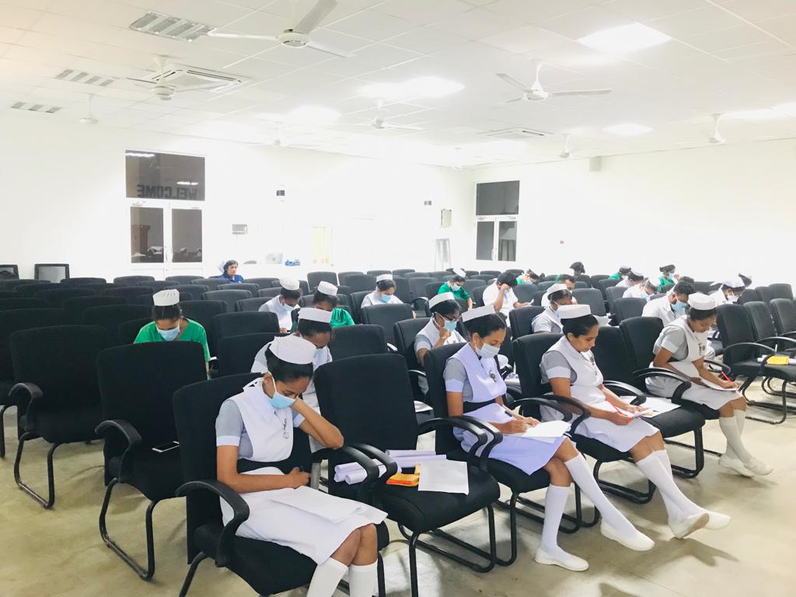
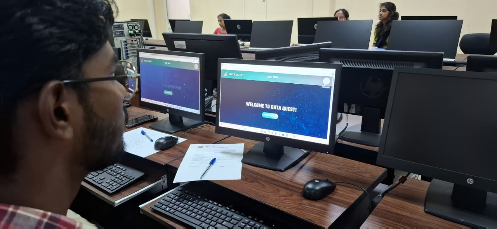
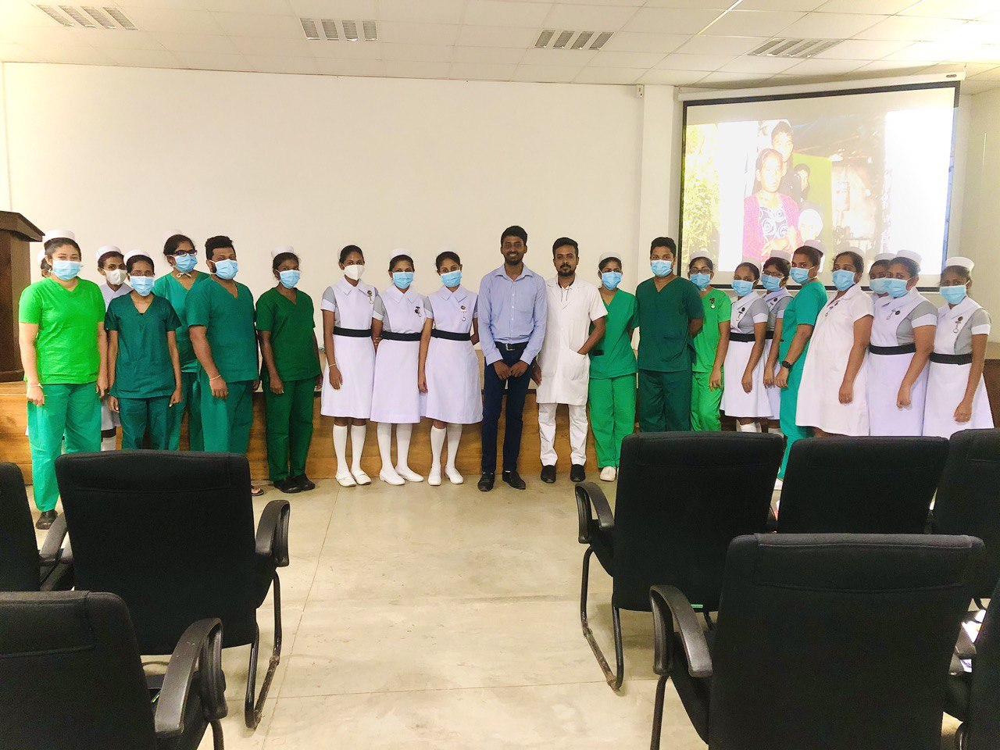
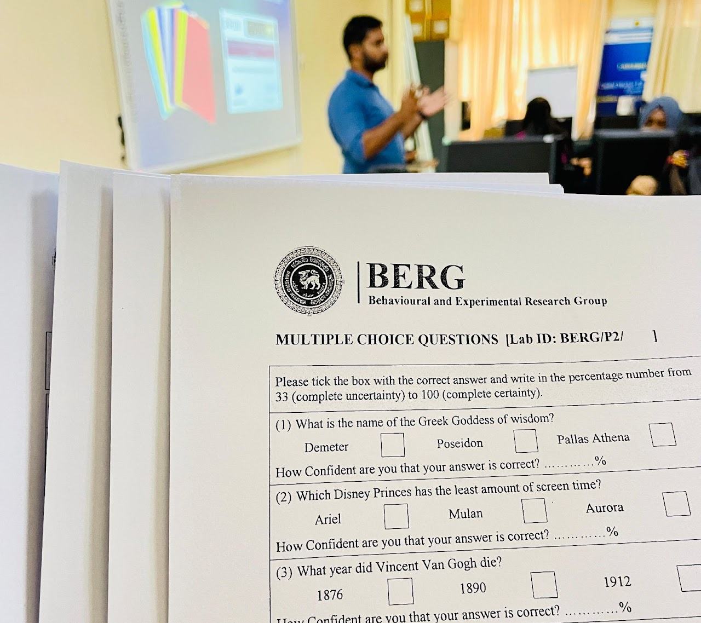
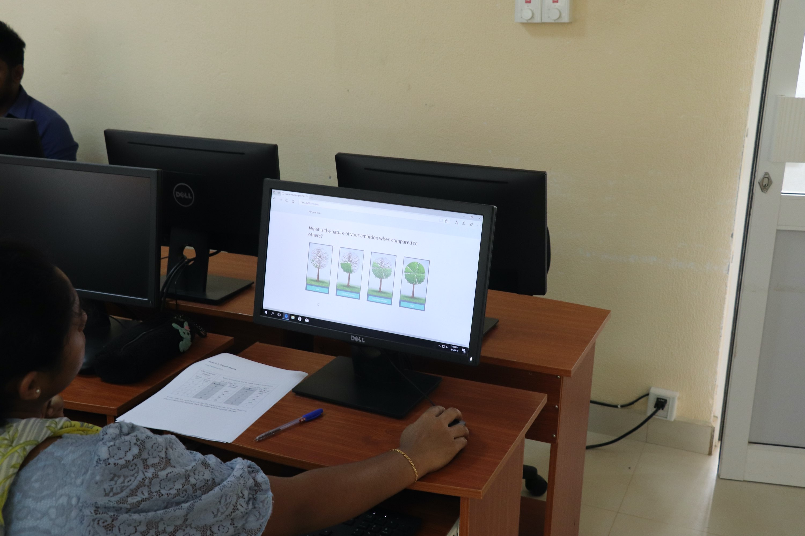
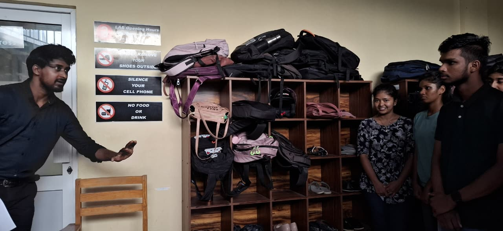
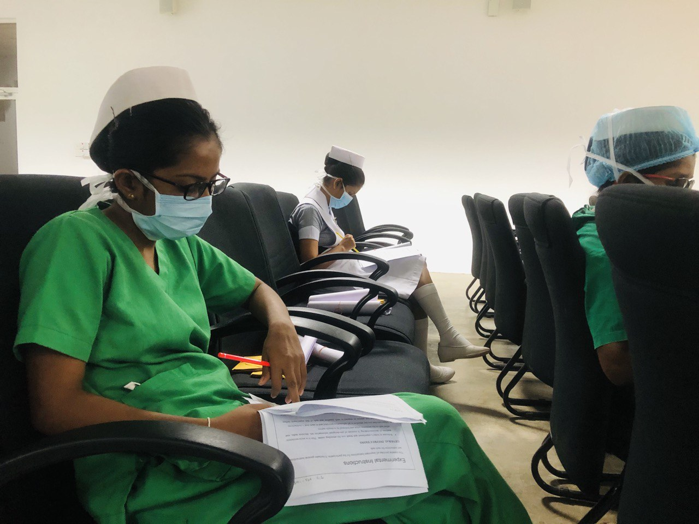
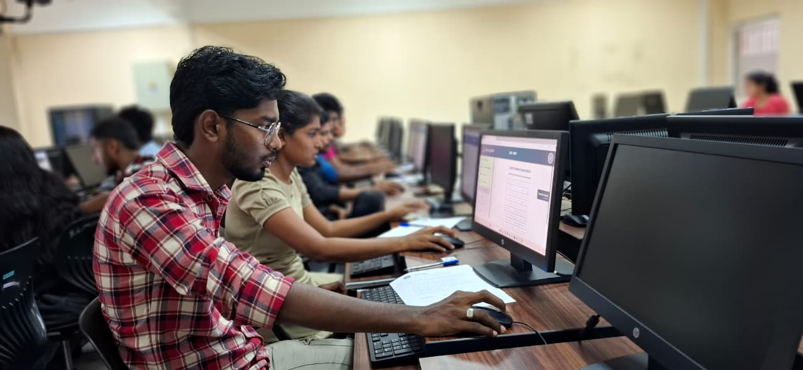
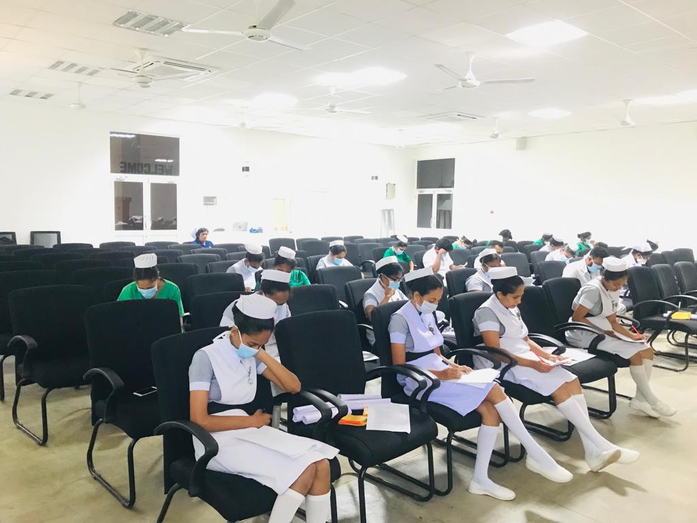